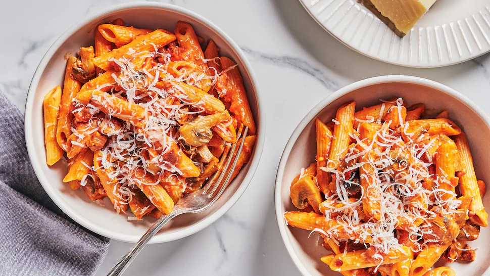

Pate

Pates
Découvrez la recette de l'incontournable plat de spaghettis sauce bolognaise, une recette italienne idéale, parfaite, économique et très facile à préparer
Spaghettis bolognaise à l'italienne : la recette rapide
Ingredients
- Ground Beef
- Onion
- Olive Oil
- Basilic
- Tomatoes
- Garlic
- Pasta
Steps
- Dans une casserole, - faites chauffer l'huile d'olive et jetez-y les oignons détaillés. Faites-les cuire à feu doux le temps qu'ils deviennent translucides. Ajoutez l'ail détaillé à la fin juste le temps qu'il dore très légèrement sans qu'ils ne brûlent.
- Make Sauce - Mettez les tomates dans la casserole et portez sur feu moyen à fort. Laissez mijoter 20 minutes en ajoutant l'origan, le basilic, le sel, le poivre, le piment de Cayenne et le sucre selon les goûts.
- Prep - Baissez le feu en remuant pour faire réduire la sauce. Réservez.
- Cook beef - Faites cuire la viande dans une poêle après l'avoir assaisonnée. Pensez à bien retirer le jus de la viande.
- Last Step - Mélangez la viande à la sauce et mélangez le tout aux pâtes cuites al dente.